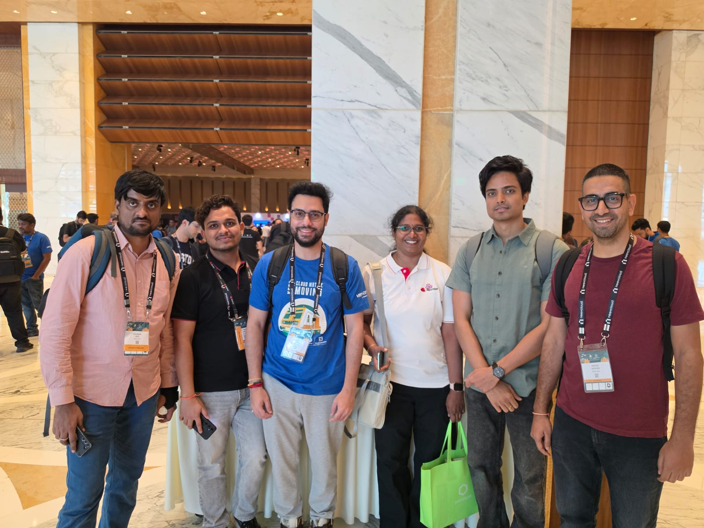
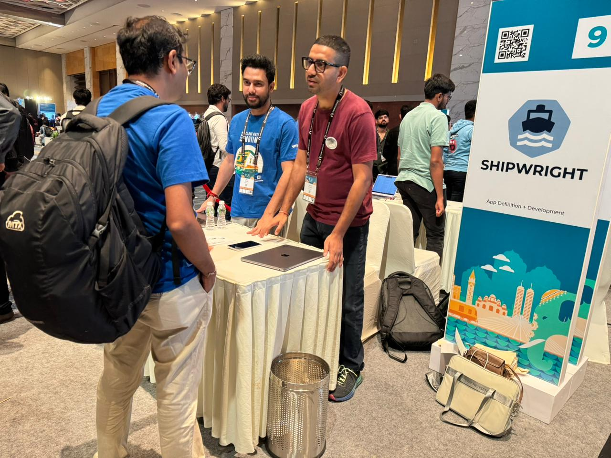

What Matters for Red Hat Summary
Mean Time To Exploitation is now negative seven days. By the time a CVE is publicly disclosed, it has already been exploited. Chainguard's Dan Lorenc drove this home in his keynote — AI generates ~50x more code per sprint, and human reviewers cannot keep up with the patching load.
At the booth, Rahul Duvedi from Chainguard spoke about DriftlessAF — the agentic framework behind their Factory 2.0 — bots that continuously reconcile code to a zero-CVE state, merging 600+ PRs daily with zero human involvement. In their biggest month, they remediated 2,960 unique CVEs. Directly relevant to Project Lightwell.
CAST AI cut their monthly AI spend from $200k to $20k — a 90% cost reduction — by routing 91.5% of agent work to open-source models. Their tool Kimchi assigns roles to models: a planner, a builder, a reviewer, an explorer. Frontier models handle the 7.7% that needs them; everything else runs at ~14x lower cost per token.
DevRel Kunal Das showed me the live internal dashboard at the booth: 90% of CAST AI's engineers have adopted Kimchi. This is real company-wide uptake, not a pilot.
80 visitors in two hours at the Shipwright booth. We hosted the Shipwright table at the CNCF project pavilion on Friday (11:30 AM – 1:30 PM). Most visitors asked the same question: "What is Shipwright?" — which we answered by walking through the build tool evolution and demoing the Buildah strategy live. We logged 25 badge contacts from BlackRock, JP Morgan Chase, Nutanix, HSBC, Eli Lilly, and more.
Shipwright at the CNCF Pavilion Booth
Friday, 11:30 AM to 1:30 PM · CNCF Project Pavilion
Sayan and I hosted the table using a booth runbook I had prepared. Around 80 visitors came through in two hours. We logged 25 badge contacts and ran a live Buildah strategy demo. The pitch was structured: why the build tool landscape is fragmented, how Shipwright unifies it, and a demo to bring it home.
#1 question: "What is Shipwright?"
Most visitors knew Docker, many had heard of Kaniko or Buildpacks, but few knew a project unified all of them. The pitch that worked: start with the evolution. Docker had a daemon and root problem, so Kaniko and Buildah appeared. Dockerfiles were too rigid, so Buildpacks and ko appeared. Then Shipwright came along to unify all of them under one Kubernetes-native API.
The demo that clicked
I showed how a single Build YAML decouples what to build from how to build it. Swap the strategy reference (Buildah, Buildpacks, ko) and the same source builds with a completely different tool. That decoupling was the "aha" moment for most visitors.
Having attended the Buildpacks and Jib sessions earlier made these conversations richer. When someone already understood pack rebase or Jib's layered model: "Shipwright doesn't replace those tools. It gives your platform team a single API to offer all of them."
Who came by
BlackRock, JP Morgan Chase, Nutanix, HSBC, Eli Lilly, MassMutual, SLB, Carl Zeiss, CoverGo, and others, a strong mix of financial services, enterprise, and infrastructure companies. Several visitors expressed interest in contributing to Shipwright. We should follow up and onboard a couple of new contributors from this list.

Chainguard: "Open Source at Machine Speed" Session
Dan Lorenc, CEO & Founder, Chainguard
Mean Time To Exploitation is now negative seven days. By the time a CVE is publicly disclosed, it has already been exploited.
Lorenc painted a bleak picture: every step from report to patch to downstream fix has a human in the way, and AI is flooding the pipeline with roughly 50x more code per sprint. The attack surface is growing faster than anyone can patch it. What really got the room's attention was vulnerability chaining: low-severity CVEs combining into a 9.8 Critical, with attackers finding them before maintainers do.
During Q&A, someone asked whether cheaper models change the economics. Lorenc's answer: no. Discovery is harder and costlier than fixing, regardless of what model you use.
How Chainguard uses AI agents internally
The keynote laid out the crisis. My conversation with Rahul Duvedi at the booth filled in how Chainguard is actually solving it. I was curious about how they use Claude Code and agentic automation internally, and it runs deeper than I expected.
Their framework DriftlessAF powers what they call Factory 2.0: reconciler bots that continuously push code toward a zero-CVE state, processing 600+ PRs daily. In their biggest month they remediated 2,960 unique CVEs.
They also built Chainguard Agent Skills, a hardened catalog of 1,000+ agent skills with a proper registry namespace, versioning, pinning, and audit trails.
Cut the Bill, Not the Brains: CAST AI & Kimchi Session
Matas Kaminskas, CAST AI / Kimchi
Open-source models are good enough. CAST AI routes 91.5% of agent work to them and 90% of their engineers adopted it willingly.
Kaminskas's thesis: the harness matters more than the model. CAST AI built Kimchi, an open-source harness that routes work across models by role. Frontier models handle the 7.7% of work that needs them. Open-source models handle the other 91.5% at roughly 14x lower cost per token.
The secret sauce: codified discipline
Their philosophy is that every time an agent makes a mistake, you codify it as a rule so it never happens again. Conventions go into AGENTS.md. Destructive commands get gated by hooks. Long tasks get split into planner and executor. The harness gets smarter with every failure.
The proof: live numbers from inside CAST AI
DevRel Kunal Das showed me the live internal dashboard. 90% of CAST AI's engineers have adopted Kimchi, and their monthly AI spend dropped from $200k to $20k. Their infrastructure runs on vLLM serving across B200 × 8 GPUs with OTLP tracing built in.
Observability for the AI Era Session
OpenTelemetry + OpenLIT (Grafana) & Observability 2.0 Panel (Intuit, Atlassian, Cloudera)
Agent quality is an observability problem. Capture the right spans and you can build evals on standard OTel signals rather than bespoke tooling.
OTel shipped GenAI semantic conventions (v1.40.0) that cover model spans, agent spans, metrics, and events. Anthropic, Azure, Bedrock, and OpenAI are all supported, and so is MCP. Getting started is easy: a zero-code opentelemetry-instrument call, or OpenLIT's one-liner openlit.init(). For Go and Rust, OBI does it at the kernel level with eBPF, no code changes needed.
The panel drove home a related point: most developers resist adding observability because it feels like extra work. A platform leader's job is to make it so easy they don't even notice. If it's virtually free, the resistance disappears.
The Patching Waterfall: Buildpacks, Jib, and the O(1) Future Session
Sai Bharadwaj Avvari & Joe Kutner, Salesforce (Joe is ex-Heroku, CNB co-founder)
87% of production container images have at least one High or Critical vulnerability. But only 15% of those are in packages actually loaded at runtime. The other 85% is bloat noise.
Enterprises tend to fall into one of two traps. Hyper-Bloat: one global base image with everything baked in, 10+ GB containers, massive attack footprint. Or Fragmentation: developers adding their own libraries inside raw Dockerfiles, hundreds of unpatched configurations in production that nobody can audit.
The fix: "Reduce, Reuse, Rebase"
Cloud Native Buildpacks strictly separate image layers. When an OS-level CVE lands, you swap the OS layer. The app and runtime layers stay untouched:
app (4a090ac) unchanged
jdk (738fafa) unchanged
OS (8e3e01b2) → OS (679b84b) [only this layer changes]This turns patching from O(N) to O(1). Today, one critical CVE across 1,000 applications means 1,000 full rebuilds, hours to days of CI time. With Buildpacks it is one stack update via pack rebase, done in minutes. "Stop rebuilding applications to patch infrastructure. Update once, propagate everywhere."
Jib: same philosophy for Java
Jib builds OCI images for Spring Boot without a Dockerfile. Layered, daemonless, and incremental rebuilds touch only the changed class. Different tool, same principle: strict layer separation makes patching surgical.
Other Sessions Session
IBM: Agentic Systems with Quarkus
IBM presented a clean taxonomy for how to think about agent orchestration: sequence, loop, parallelization, and conditional routing. Framework-agnostic and useful as a mental model for anyone building multi-agent systems.
NVIDIA: DGX Spark and Dynamic Resource Allocation
DRA is GA in Kubernetes 1.34. Instead of counting GPUs with nvidia.com/gpu: 1, you now describe what you need. The model follows the CSI storage stack: DeviceClass, ResourceSlice, ResourceClaim. A much more flexible way to schedule GPU workloads.
Harbor + Velero: AI Model Management (Broadcom)
Harbor 2.13 works as an OCI-native model registry. One registry for containers, Helm charts, and AI models. The key insight: the inference image never changes, only the OCI tag does. Swap the model without rebuilding the serving container.
Learnings & Action Items Takeaways
Shipwright Learnings
- The #1 question is still "What is Shipwright?" — Most visitors had never heard of it. The pitch that worked best was the evolution story: Docker's daemon problem → Kaniko/Buildah → Dockerfile rigidity → Buildpacks/ko → Shipwright unifying all of them under one Kubernetes-native API.
- The Buildah live demo was the "aha" moment. Showing how a single Build YAML decouples what to build from how — swap the BuildStrategy reference and the same source builds with a different tool.
- Cross-session knowledge deepened the pitch. Attending the Buildpacks and Jib talks beforehand enabled richer conversations: "Shipwright doesn't replace those tools — it gives your platform team a single API to offer all of them." That framing landed especially well with platform engineers.
- The Buildpacks O(1) rebase story is directly applicable. Shipwright already builds without a Dockerfile via BuildStrategy — the open question is whether we can offer the same
pack rebaseO(1) patching story, and how that connects to Lightwell's CVE remediation pipeline. - The Sysdig 15%/85% stat is a powerful talking point for advocating minimal runtime images in Shipwright build strategies — only 15% of High/Critical vulns are in packages actually loaded at runtime.
- Strong enterprise interest. 80 visitors, 25 badge contacts from BlackRock, JP Morgan Chase, Nutanix, HSBC, Eli Lilly, MassMutual, SLB, Carl Zeiss, CoverGo — financial services and infrastructure companies are the sweet spot.
Action Items
- Follow up on booth contacts and onboard new contributors. Several visitors expressed interest in contributing to Shipwright — follow up and convert a couple into active contributors.
- Investigate O(1) rebase for Shipwright. Evaluate whether Shipwright can offer Buildpacks-style
pack rebaseO(1) patching and how that integrates with Lightwell's remediation pipeline. - Evaluate Chainguard's DriftlessAF pattern for Lightwell. The reconciliation loop ("desired state = zero CVEs" → auto-fix PR → auto-merge on green CI) is a concrete architecture reference for Lightwell's remediation pipeline.
- Study Chainguard's skills registry model for OpenShift Builds agent skills. Versioned, pinnable, diffable skills as OCI-like artifacts — a pattern to move away from skills scattered across repos and local setups.
- Evaluate CAST AI's Kimchi for cost optimization. The routing-by-role model (planner, builder, reviewer, explorer across different models) and the 14x cost differential between frontier and OSS models are worth studying as we scale agent usage across the team.
- Add QR code linking to GitHub on future booth handouts.